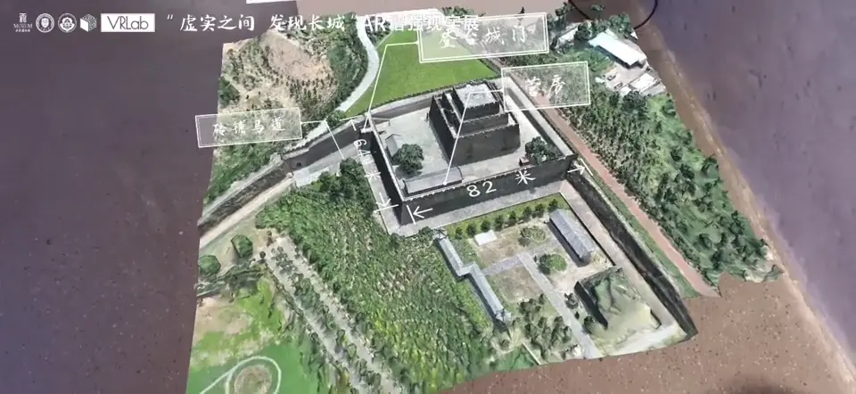
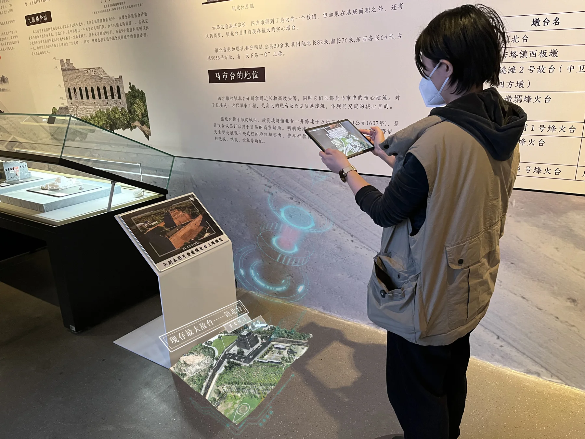
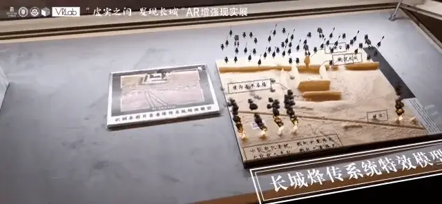
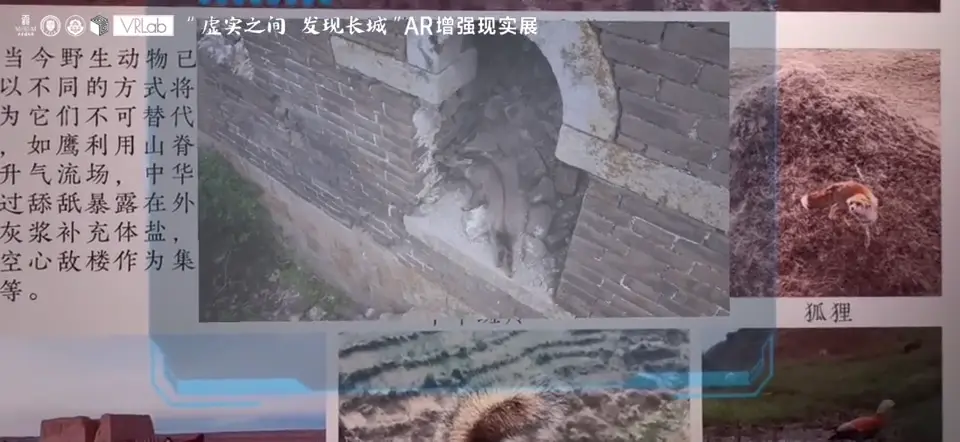

01让尺度，
敌台 / SPATIAL SCENE
让尺度，
有了可以理解的形状。
建筑很大，展厅有限。通过镇北台的数字场景，建筑布局、尺寸关系与悬浮注记可以共同出现在观众眼前。
体验重点从一张建筑照片，走近一个完整空间。

IMAGE TARGET
空间 + 尺寸 + 注记MOBILE AR / EXHIBITION EXPERIENCE
一张图像，一次对准。
让建筑、历史与自然，在眼前继续展开。
2023 / 天津博物馆展陈应用
Unity · Vuforia · Android

打开应用从手机桌面的图标进入。
对准图像找到展板上的识别角标。
发现更多空间、特效与内容随之出现。
01 / TRY THE INTERACTION
选择一个场景，移动虚拟手机对准图像。
也可以点击「对准识别图」，一步进入体验。
移动到图像上方，
让静止的展品发生变化。
建筑尺度 / 空间关系 / 悬浮注记
图像已识别 · 内容已展开使用原版识别图与扫描素材，呈现网页中的对准与唤起过程。
02 / THREE WAYS TO DISCOVER
从一座建筑，到一种历史情境，
再到与长城相遇的自然生命。
敌台 / SPATIAL SCENE
建筑很大，展厅有限。通过镇北台的数字场景，建筑布局、尺寸关系与悬浮注记可以共同出现在观众眼前。
体验重点从一张建筑照片，走近一个完整空间。

烽火 / AUGMENTED EFFECT
以烽火图像作为入口，增强画面与实体展陈相结合。原本静止的沙盘，成为观察烽传系统特效与历史情境的窗口。
体验重点保持真实展品在场，让数字内容补充讲述。

斑羚 / IMAGE ACTIVATION
对准展板中的中华斑羚图片，唤起与图像关联的动态内容。观看从平面的照片，延伸到照片背后的场景。
体验重点保留熟悉的观看方式，在识别后自然展开内容。

03 / A CONTINUOUS EXPERIENCE
入口、识别和反馈，
构成一次连续的观展动作。
应用图标、地面引导与图像角标形成连续提示，让观众知道从哪里开始。
把展板图片作为入口，让手机成为观察展品的另一个窗口。
以场景、注记和动态内容反馈识别结果，让观众继续观察与探索。
不止看见，
也能走近一点。